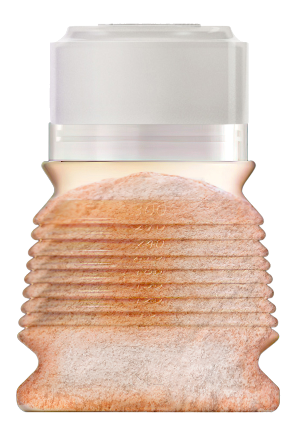

1
Dosez
Placez la dose de poudre dans BIBEON replié.
Jusqu’à 8 doses.
Fabriqué en France · Testé par le LNE
Les sorties d’avant
Biberons rigides. Boîtes doseuses.
Le contenu change.
Le volume, jamais.

« Faire les grands magasins avec six grands biberons vides et six boîtes de lait en poudre dans la poussette, en plus des couches — non.
BIBEON est né de cette perte de liberté. »

Un biberon.
Tout le reste, en moins.
Évolutif
Il grandit à la demande.
150 ml
4 soufflets dépliés
Toujours prêt
L’eau au moment du repas.
Replié
La dose préservée.
Conservée à l’abri de la lumière.

Une paroi accidentée
Un lait sans grumeaux.
Tout simplement.
Les 3 gestes
Placez la dose de poudre dans BIBEON replié.
Jusqu’à 8 doses.

Desserrez le bloc bague-tétine, sans le retirer.
Dépliez BIBEON entièrement.

Versez l’eau jusqu’à la graduation voulue.
Refermez. Secouez.
Comme d’habitude